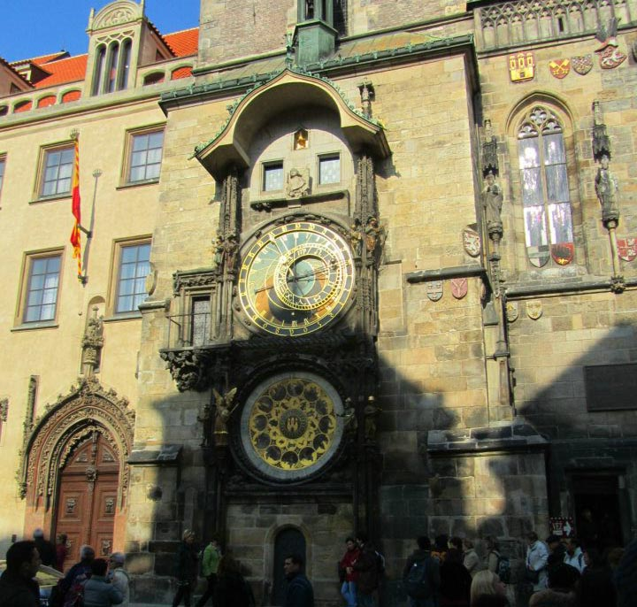
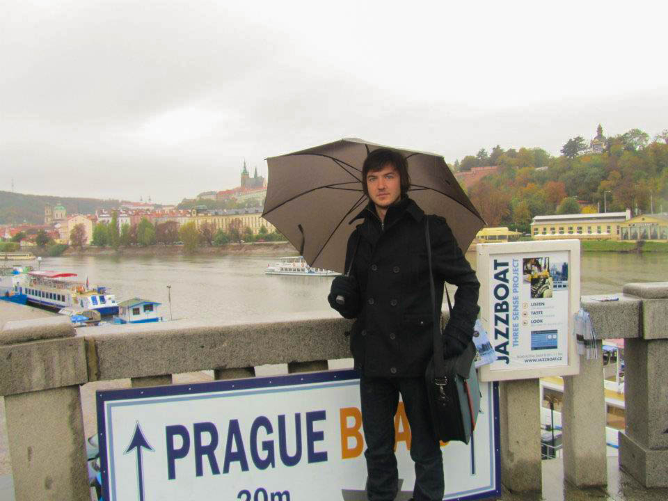

Introduction
Prague, the capital of the Czech Republic, is a city where history and modernity intertwine in perfect harmony. Known as the "City of a Hundred Spires," Prague captivates visitors with its stunning architecture, rich cultural heritage, and vibrant street life. Whether you're an art enthusiast, a history buff, or simply seeking a magical European escape, Prague has endless treasures waiting for you.
My Personal Journey Through Prague
I still vividly recall my first encounter with Prague’s enchanting atmosphere. Wandering along the narrow cobblestone streets, I was mesmerized by the blend of ancient charm and modern energy. Every historic façade and hidden courtyard seemed to hold a secret waiting to be discovered.
Over the years, I've learned that the true essence of Prague lies in its details. I spent countless hours watching the Astronomical Clock in Old Town Square, a ritual that not only marked the passing of time but also connected me to the city's storied past. The spontaneity of street performances and the quiet moments in tucked-away cafés taught me to savor every experience.
My journeys in Prague have also been about practical learning—figuring out the best ways to navigate the maze-like streets using efficient public transport, discovering lesser-known neighborhoods like Vyšehrad, and even picking up a few basic Czech phrases that opened doors to genuine local interactions. These insights made every visit a rewarding lesson in travel.
I encourage every traveler to take the time to explore Prague beyond the typical tourist spots. Delve into its rich culture, embrace its history, and discover practical tips that will enhance your experience. Prague is not just a destination—it's a living classroom that offers inspiration, education, and unforgettable memories.
History
Prague's history spans over a thousand years, serving as a major cultural, economic, and political center in Central Europe. From its medieval roots and the reign of the Přemyslid dynasty to the influence of the Habsburgs and the events of the Velvet Revolution, every era has left its mark on the city's architecture and soul.
How to Get There
Prague is well-connected through multiple transportation options:
- By Air: Václav Havel Airport Prague (PRG) serves as the main international gateway, with easy transfers to the city center via train, bus, or taxi.
- By Train: High-speed trains from Berlin, Vienna, and Budapest make Prague a convenient destination in Europe.
- By Bus: Affordable bus services connect Prague to several major European cities.
- By Car: Renting a car provides flexibility to explore the Czech countryside and nearby countries.
Top Attractions in Prague
Old Town Square and Astronomical Clock
The vibrant heart of Prague, Old Town Square, is surrounded by historical buildings and home to the famous Astronomical Clock. Witness the clock's hourly show and soak in the lively atmosphere of street performers and local vendors.
Charles Bridge
This iconic 14th-century bridge spans the Vltava River, offering breathtaking views of Prague Castle and the city skyline. Enjoy a leisurely walk across and discover its many legends.

Prague Castle
Dominating the city skyline, Prague Castle is the largest ancient castle complex in the world. Explore its vast grounds, historic halls, and stunning chapels for a deep dive into Czech history.
St. Vitus Cathedral
Located within the Prague Castle complex, this Gothic masterpiece features intricate stained glass windows and soaring spires that capture the grandeur of the city.

Tips and Recommendations
Do’s and Don’ts
- Do: Wear comfortable shoes—the cobblestone streets of Prague can be challenging.
- Don’t: Overpack your schedule; allow time for spontaneous exploration.
- Do: Use public transport or walk to truly experience the local vibe.
- Don’t: Leave valuables unattended in crowded areas.
Packing List
- Comfortable walking shoes.
- Weather-appropriate clothing and a light jacket.
- Reusable water bottle and portable charger.
- Basic Czech phrases and a guidebook or map.
Costs
- Entry Fees: Expect to pay around €14 for Prague Castle.
- Transportation: A 24-hour public transport ticket costs roughly €4.50.
- Meals: Enjoy local cuisine for about €10-25 per meal.
- Accommodation: Options range from budget hostels at €15 per night to luxury hotels over €150 per night.
Currency and Money Matters
The official currency is the Czech Koruna (CZK). Exchange rates are competitive, and ATMs are widely available throughout Prague. Remember to carry some cash for small vendors and markets, and always inform your bank before international travel.
Practical Information
Best Time to Visit
The ideal seasons to visit Prague are spring (April to June) and autumn (September to October) when the weather is mild and the crowds are fewer. These periods are perfect for exploring the city's outdoor attractions and historic sites.
Language
While Czech is the official language, many people in Prague speak English—especially in tourist areas. Learning a few basic phrases in Czech can go a long way in enhancing your experience.
Health and Safety
Prague is generally safe for tourists, but it’s wise to be mindful of your belongings in crowded areas and to follow standard travel precautions.
Cultural Immersion
Immerse yourself in Prague's cultural scene by attending local festivals, visiting art galleries, and exploring historical neighborhoods. Whether it’s joining a guided tour of the Jewish Quarter or sampling local street food at Havelské tržiště, these experiences offer invaluable insights into the city's vibrant heritage.
Food and Cuisine
Prague’s culinary offerings are as rich and diverse as its history. From hearty Czech goulash and dumplings to sweet treats like trdelník, there’s something to satisfy every palate. Visit traditional pubs (hospoda) for authentic experiences, or try contemporary restaurants for a modern twist on classic dishes.
Adventure and Activities
Prague offers an array of activities that combine excitement with learning opportunities. Enjoy a twilight boat tour on the Vltava River, join a photography tour to capture the city's iconic views, or challenge yourself with an interactive escape room experience.
About Prague
Prague is a city steeped in history and bursting with cultural vibrancy. It serves as both a gateway to the rich traditions of Central Europe and a modern, dynamic metropolis. With its blend of medieval architecture, world-class museums, and lively street scenes, Prague promises to inspire and educate every traveler.